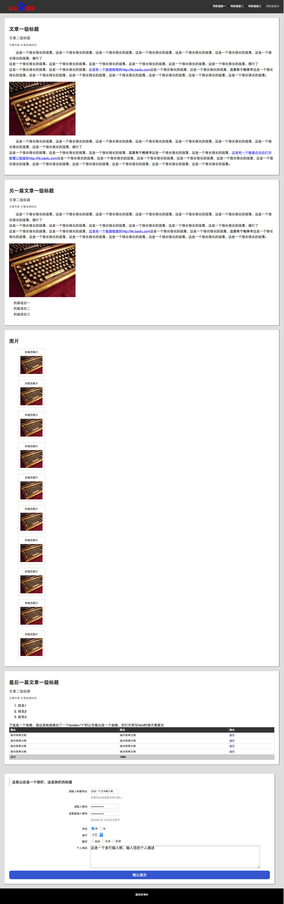
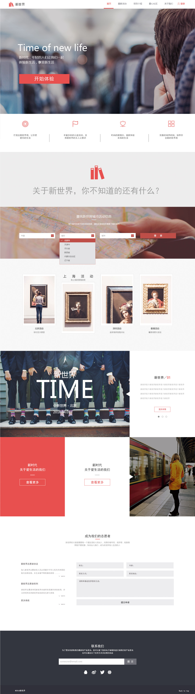

练手项目
-
网易云课堂《Web前端开发实践》大作业
根据 视觉稿和交互要求（点击查看）完成页面设计。全部用原生JavaScript，未使用任何js框架。
-

百度前端训练营2016 - task 01
任务一：零基础HTML编码参考 示例图（点击查看），完成一个HTML页面代码编写（不写CSS，不需要关注样式，只关注文档结构）
-

百度前端训练营2016 - task 02
任务二：零基础HTML及CSS编码（一）基于第一个任务“零基础HTML编码”的代码，参考 示例图（点击查看），在步骤一的代码基础上增加CSS样式代码的编写
-

百度前端训练营2016 - task 03
任务三：三栏式布局 - float布局
任务三：三栏式布局 - flex布局
任务三：三栏式布局 - calc()布局
任务三：三栏式布局 - table布局使用 HTML 与 CSS 按照 示例图（点击查看）实现三栏式布局。
左右两栏宽度固定，中间一栏根据父元素宽度填充满，最外面的框应理解为浏览器。背景色为 #eee 区域的高度取决于三个子元素中最高的高度。 -

百度前端训练营2016 - task 04
任务四：定位和居中问题实现如示例图（点击打开）的效果灰色元素水平垂直居中，有两个四分之一圆位于其左上角和右下角
-

百度前端训练营2016 - task 07
任务七：实现常见的技术产品官网的页面架构及样式布局参考 效果图，通过HTML及CSS实现设计稿 设计稿效果